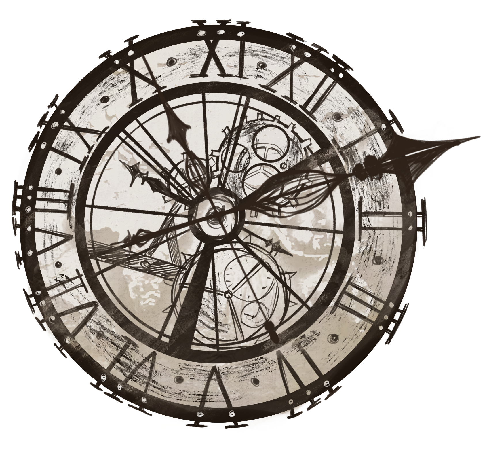

IMPORTANT NOTE
- The First Great Revolution (193)
- Blow up the NTUT (201)
- During the Ice Age (540–1092), a refrigerator was developed
- The Second Great Revolution (2077) focuses on strengthening life
- Final evaluation (2791)
- Extinction (2792), especially college students disappeared in large numbers
- Suspension of study (4008)
TIME
- Forest Country: 22:37
- Kingdom of Sand: 10:05
- Salda: 08:51
- Sky Island: 12:00
- Indas: 18:49
- Mecca: 15:11
- Kandari: 09:26
- Grass Country: 04:18

CLOCK OF THE WORLD
The clock has been running for tens of thousands of years. Regardless of the time difference, countries use this clock as the standard and ring the bell once a year.